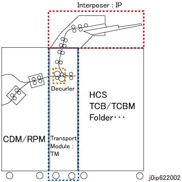

6.2.2.6 IP Basic 配置 
The IP is composed 的 Interposer (IP) 和 the 传输 模块 (TM). The 传输 模块 和/与 IP is prepared as a commercial product, 和 the IP 和 the TM 是 bundled as separate units.
IP 章节
本节 具有 纸张 Trays, 每个 of 哪个 可以 送纸 250 纸张 of 纸张 (stackable 高度: 26 mm)*1.
纸张 sizes 是 recognized as the 纸张尺寸 指定的 in UI. [Auto 纸张 选择] supports 8.5x11 LEF, A4 LEF, B4 SEF, 11x17 SEF, 16K SEF, 8K SEF, 和 UK-Quatro SEF. In addition, mixed 尺寸 纸张 feeding in the TM 不是 guaranteed.
其 电源 is supplied 从 the TM.
It is controlled 通过 the IP PWB 的 TM.

*1: The 号码 纸张的 该 可以 loaded is determined 基于 纸张 of 80 gsm (C2) or lighter. 用于 the 其他 80 gsm 纸张, 250 纸张 可能 不 be reached.
TM 章节
本节 mixes 纸张 fed 从 the IP 和/与 IOT 复印 纸张 at an appropriate 时序. It 也 passes 纸张 该 已 received 从 the CDM or IOT主机 到 subsequent 功能模块.
The TM 章节 具有 消卷器 特性, 哪个 corrects 卷曲 of 纸张.
The IP receives an 操作说明 从 the CDM or 装订器 D6 和 操作 accordingly. 当...时 两个 the CDM 和 装订器 D6 是 connected, the IP follows an 操作说明 从 the CDM.

(图 1) ip622002